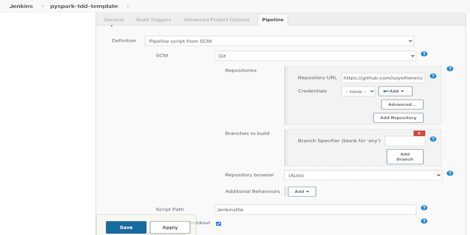

One major challenge in data pipeline implementation is reliably testing the pipeline codes.
The outcome of the code is tightly coupled with data and the environment and this consequently blocks the developer to follow test-driven development, identify early bugs by writing good unit testing, and release the code via CICD with confidence.
One way to overcome the reliability challenge is to use immutable data to run and test the pipeline so that the result of ETL functions can be matched against known outputs.
Obviously, this requires a good knowledge of the application and how well the data matches business requirements. Also required are some set-ups to enable the developer to focus on building the application instead of spending time on the environment preparation.
This blog-post focuses on providing a model of self-contained data pipelines with CICD implementation.
A typical pipeline uses files, tables and dataframes these will be made available from datafiles stored in git along with the pipeline code.
We will leverage Apache PySpark and Pytest to develop a generic conftest file for providing the dev environment.
Follow along code is available at https://github.com/soyelherein/pyspark-cicd-template
Lets look into our pipeline and break it into testable modules. For demonstration purposes, let’s consider we have pipeline that consumes “pageviews” file and merges it into the final target table.
| page_view | created_date | last_active | |
|---|---|---|---|
| james@example.com | 10 | 2020-01-01 | 2020-07-04 |
| mary@example.com | 100 | 2020-02-04 | 2020-02-04 |
| john@example.com | 1 | 2020-03-04 | 2020-06-04 |
| email,pages |
|---|
| james@example.com,home |
| james@example.com,about |
| patricia@example.com,home |
| page_view | created_date | last_active | |
|---|---|---|---|
| james@example.com | 12 | 2020-01-01 | 2020-07-21 |
| mary@example.com | 100 | 2020-02-04 | 2020-02-04 |
| john@example.com | 1 | 2020-03-04 | 2020-06-04 |
| patricia@example.com | 1 | 2020-07-21 | 2020-07-01 |
If you look closely, there are five major sections in the pipeline.
As it becomes tedious and impractical to test and debug spark-jobs by sending them to a cluster (spark-submit) and teams can become Sherlock Holmes — investigating clues in stack-traces on what could have gone wrong. pipenv — To avoid the lifeless scenarios we might encounter, we can create an isolated environment (say thanks to pipenv) to initiate a Pyspark session whereas:
all development and production dependencies are described in the Pipfile
pipenv helps us managing project dependencies and Python environments (i.e. virtual environments)
convenient with dependencies management on an ad-hoc basis just with pip install pipenv --dev
dependencies.job_submitter — Since a data application can have numerous upstream and downstream pipelines, it makes sense to take the spark environment management and other common tasks into a shared entry point so that the applications can focus only on their business logic.
This submitter module takes the job name as an argument and executes the functionality defined in it. The pipeline itself has to expose a run method(discussed in the Decouple Application section) that is the entry point for the ETL. With this submitter module, the command is changed like below command:
$SPARK_HOME/bin/spark-submit \
--py-files dependencies/job_submitter.py, jobs/pipeline_wo_modules.py \
dependencies/job_submitter.py --job pipeline_wo_modules
Extract — Reads the incremental file and historical data from the table and return 2 Dataframes
Transform — Calculates the metrics based on incremental and historical DataFrames and return a final DataFrame
Load — Writes the data into the final output path
Run — Does the integration between ETL process. It is exposed to the job submitter module. It accepts the spark session, job configurations, and a logger object to execute the pipeline.
configs and ddl — We will take out the static configurations and place them in a JSON file (configs/config.json) so that it can be overwritten as per the test config.
As explained in the job_submitter module, this config along with any dynamic parameters to the job is made available to the pipeline methods as a dictionary. We will also take out the schema from the code in the ddl/schema.py file. This will be helpful to create the test data in the form of DataFrames and Tables using a helper method during testing.
Given that we have structured our ETL jobs in testable modules we are all set to focus on the tests.
test_pipeline —We have created a session-level pytest fixture containing all the hard work done in the conftest in an object. As you see in the later section we will perform the entire testing using its member attributes.
Now let’s test our transform method that takes the incremental and historical DataFrames as input and produces the final DataFrame.
Since the I/O operations are already been separated out we can introspect the calling behavior of extract and load using mocks. These mocks are set up in the conftest file.
Since we have already tested individual methods we can make use of patching to do the integration test by patching the outcomes of different functions and avoiding side-effects of writing into the disk.
These tests can be run from IDE or by simply running pytest command.
In a complex production scenario, related pipeline methods can be connected in terms of inputs and expected outputs which is immutable. A fair understanding of application and segregation of different subject area can provide a valuable regression like confidence for CICD integration.
$SPARK_HOME/bin/spark-submit \
--py-files packages.zip \
--files configs/config.json \
dependencies/job_submitter.py --job pipeline --conf-file configs/config.json

Source code: https://github.com/soyelherein/pyspark-cicd-template
Published on 18 December 2020 ©soyel.alam@ucdconnect.ie